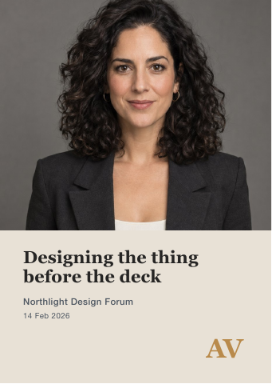

ASTRID VELLACOURT — BIO & TALK COPY Studio one-liner: Vellacourt & Sund is a six-person industrial design studio working on products people keep. Speaker bio (short): Astrid Vellacourt co-founded and runs Vellacourt & Sund, a six-person industrial design studio. She works on physical products from first sketch to production and is raising a seed round to grow the studio's own product line.
Gatsby · Pilot brief · PHOTO-20
Astrid Vellacourt - Editorial portrait session
SB3-020-PHO · Photo & Image
Client brief
A coherent speaking and investor image set for an industrial-design founder
I am preparing speaking and investor materials for Astrid Vellacourt. The photographs and supporting pieces need to feel like the same person and practice: considered, credible and recognisably connected to industrial design.
The commission
Speaker booking one-pager: 1 named export. The biography preserves approved facts. The talk offer is clear: each talk in her bio and talk copy, with its title and its one-line subject, word for word. The booking contact is readable: it is her name and studio as her sign-off gives them, Astrid Vellacourt - Vellacourt & Sund.
Confirmed-talk speaker announcement: 3 named exports. The event name is visible. The event date matches this talk record, written exactly as the record writes it. The speaker name is clear, and the post uses her announcement wording word for word, filled in with this talk's event name, date and title. Each announcement is 1080 x 1350 px (4:5), as the output register sets, not a square canvas.
Confirmed-talk speaker banner: 3 named exports. The banner identifies this talk by its title, event name and date, each written as this talk's record writes it. The supplied talk portrait belongs to this record.
Speaker talk card: 9 named exports. The talk title matches this record, and the card also gives this talk's date and format, written as the record writes them. The event name is visible, written as the record writes it.
Use the supplied approved copy and factual records. Permission restrictions in the owner's notes take precedence over inclusion in a source table.
Use the attached brand identity and the source files listed in the asset manifest. The output register defines exact filenames, pages, sizes and record bindings. Supporting previews are welcome but cannot replace those files.
Source of truth
Approved client notes and permissions govern factual corrections. V4 output register governs commissioned output classes and sizes. Original rows are not automatically approved copy.
Production constraints
- Do not invent names, prices, claims, product features, locations, credentials, records, or documentary events that are absent from the approved inputs.
- Do not silently replace a weak supplied asset. Use it honestly, reject it with a reason, or take only the brief's declared Stock or concept exception.
- Record every omission, substitution, reconciliation, and material quality compromise in the delivery manifest.
- Preserve identity, product geometry, material behavior, and documentary truth; retouching may improve presentation but may not change what the subject is.
- Use the supplied approved copy and factual records. Do not invent claims, prices, dates, credentials or product features.
- A clean preview is not a final file. Supply every named export.
- Retouching, masks, crop matrices and contact sheets support production; they do not replace the commissioned finished collateral.
Brand identity
Astrid Vellacourt
Someone who runs a company
- Sector
- The founder personal brand of the co-founder and managing director of Vellacourt & Sund, a six-person industrial design studio, during a seed raise and a European speaking season.
- Origin and scale
- Studio Vellacourt & Sund founded 2019 in Europe, six people; the personal brand is Astrid's own, built for a seed round and three conference talks between February and May.
- About
- Astrid Vellacourt co-founded and runs Vellacourt & Sund, a six-person industrial design studio. Her personal brand exists for the season when her face is in front of investors and programme committees who do not yet know her. It has to read as a person who runs a company, composed and credible, never as an influencer or an account, because she is asking for money and for stage time.
- Personality
- composed
- credible
- understated
- considered
- design-led
- quietly confident
- Audience
- Institutional investors, conference programme committees and prospective senior hires; Astrid is between 30 and 50.
- Price positioning
- Founder personal-brand package 900 to 1,800 dollars, pitched at institutional level. Neither an over-filtered influencer treatment nor a stiff corporate flash-on-white; understated is the point.
- Values
- Work that reads as a design studio founder at institutional level, with her own mark used quietly and her likeness kept honest.
- Voice
- First person, plain and self-possessed. Example line: I want it to look like someone who runs a company, not someone who runs an account.
- Brand assets
- There is no brand kit. The AV monogram exists only as a blind deboss pressed into an old studio card, with no file and the printer closed, surviving only as a photograph of the impression. The warm ground she wants and the dark ground her press kit uses are described in her placement notes rather than supplied as artwork.
Colour palette
Vellacourt Ink
#262524mandatory where type sits on Warm Neutral or BoneHer name, talk titles and running text on Warm Neutral or Bone, as the talk title on vellacourt_speakercard_template.pdf; also a dark panel or ground, as that card's portrait well. Never the monogram.
Warm Neutral
#E8E1D6mandatory on every talk card; elsewhere one of the two main groundsThe light ground: the whole ground of vellacourt_speakercard_template.pdf. Also type on Deep Ground or Vellacourt Ink.
Studio Slate
#4C5560optional accentThe event and date line on Warm Neutral or Bone, as on vellacourt_speakercard_template.pdf. Never a ground, a panel, her name, a talk title or the monogram.
Ochre
#B98A4Bmandatory for the AV monogram wherever it is printed rather than pressed blindThe AV monogram and nothing else, as the corner mark on vellacourt_speakercard_template.pdf. Never type, a rule, a ground or a panel.
Deep Ground
#16171Aoptional groundThe very dark ground her press kit and deck sit on (vellacourt_placements.txt): a ground or panel carrying Warm Neutral or Bone type and the Ochre monogram. Never type.
Bone
#F4EFE7optional ground; mandatory under a blind monogramA light ground or panel, the only ground an uninked, blind AV monogram may be pressed into, and type on Deep Ground or Vellacourt Ink.
Palette rules
- Distribution
- Grounds and panels are Warm Neutral #E8E1D6, Bone #F4EFE7, Deep Ground #16171A or Vellacourt Ink #262524 and nothing else; Studio Slate and Ochre are never a ground or panel. Every talk card keeps the Warm Neutral ground of vellacourt_speakercard_template.pdf. On Warm Neutral or Bone, her name, talk titles and running text are Vellacourt Ink, and the event and date line is Vellacourt Ink or Studio Slate, as on vellacourt_speakercard_template.pdf (talk title in Vellacourt Ink, event and date in Studio Slate). On Deep Ground or Vellacourt Ink, all type is Warm Neutral or Bone. Ochre is for the AV monogram alone.
- Opacity
- Every palette colour is used solid, at 100% opacity. No tint, transparency, gradient, shadow, glow, bevel or blend mode is applied to any palette colour, and no scrim, gradient or overlay of any colour, black and white included, is laid over a photograph. The one exception is the AV monogram pressed blind into Bone on a printed piece, which carries no ink at all; on screen the monogram is solid Ochre, never a simulated emboss or shadow.
- Forbidden
- No gold foil, metallic, gloss, bevel, glow or drop-shadow effect on the monogram or on any type, rule, panel or icon: her own mark is used quietly, blind on Bone or in Ochre and nothing else. No pure white ground (never the stiff corporate flash on white). No colour outside the six palette hexes (#262524, #E8E1D6, #4C5560, #B98A4B, #16171A and #F4EFE7) for type, grounds, panels, rules, buttons or icons.
- Photography
- Photographs keep their own corrected colour and are never recoloured toward the palette: a cast or exposure may be corrected so the set reads as one session, but no heavy filter, colour grade or skin smoothing (never an over filtered influencer treatment).
Typography
Astrid Vellacourt's scale runs four steps across the printed card and the speaking season screens. Step 01 is her name in Instrument Serif Regular at 34 pt on 38 pt leading, tracked 30 units, sitting beneath the AV monogram, which is drawn in the same face with the A and V interlocked so their inner diagonals read as one hairline, blind on Bone or in Ochre, once per surface and never under 18 mm wide. Step 02 is the talk title in Neue Haas Grotesk Text Medium at 64 px on 70 px, tracking -5 units, the largest thing on a screen after the mark. Step 03 is the bio and running text in Neue Haas Grotesk Text Roman at 9.5 pt on 13 pt, tracking 0 with the measure capped at 65 characters. Step 04 is the event and date line in Neue Haas Grotesk Text Roman at 28 px on 36 px, tracking +15 units, which in print folds back into the 9.5 pt body.
Signature move: The AV monogram interlocks so the two inner diagonals read as one hairline, pressed blind on Bone or printed in Ochre, once per surface and never under 18 mm wide.
Display face: Instrument Serif
- Brand name
- Astrid Vellacourt
- Tagline
- Someone who runs a company
- Display face
- Instrument Serif Regular
- Text face
- Neue Haas Grotesk Text (Roman and Medium)
- Scale
- Step
- 01
- Role
- Display / H1, her name and the AV monogram
- Family
- Instrument Serif Regular
- Size
- 34 pt
- Leading
- 38 pt
- Weight
- Regular
- Tracking
- +30 units
- Sample
- Astrid Vellacourt
- Note
- The shared stroke. The AV monogram is drawn in this same face, the A and V interlocking so their inner diagonals read as one hairline, blind on Bone or in Ochre, once per surface and never under 18 mm wide. Her name sits beneath it, tracked 30 units, and lands after the mark but before the portrait.
- Step
- 02
- Role
- Subheading / H2, talk title on screen
- Family
- Neue Haas Grotesk Text Medium
- Size
- 64 px
- Leading
- 70 px
- Weight
- Medium
- Tracking
- -5 units
- Sample
- Six people, one hand
- Note
- The largest type on a speaking surface after the monogram. Talk titles never take Instrument Serif: the display serif carries her name and mark only.
- Step
- 03
- Role
- Body, bio and running text
- Family
- Neue Haas Grotesk Text Roman
- Size
- 9.5 pt
- Leading
- 13 pt
- Weight
- Roman
- Tracking
- 0 units, max 65 characters
- Sample
- I want it to look like someone who runs a company.
- Note
- Measure capped at 65 characters. Sits directly beneath the 34 pt name on the printed card, with no intervening rule or ornament.
- Step
- 04
- Role
- Fine print, event and date line
- Family
- Neue Haas Grotesk Text Roman
- Size
- 28 px
- Leading
- 36 px
- Weight
- Roman
- Tracking
- +15 units
- Sample
- Made & Kept, 2026-03-03
- Note
- The small line under a talk title on screen. In print the same information sets at 9.5 pt on 13 pt with the body.
- Signature move
- The shared stroke. The AV monogram in Instrument Serif interlocks so the two inner diagonals read as one hairline, pressed blind on Bone or printed in Ochre, once per surface and never under 18 mm wide, landing before the portrait does, with her name beneath it at 34 pt tracked 30 units.
- Rules
- Never set the monogram in Neue Haas.
- The AV monogram appears once per surface and never under 18 mm wide.
- The A and V always interlock so their inner diagonals read as one hairline.
- The monogram is blind on Bone or printed in Ochre, and nothing else.
- Her name always sits beneath the monogram at 34 pt, tracked 30 units, above the 9.5 pt body on 13 pt leading.
- The mark lands before the portrait does in reading order.
- Neither an over filtered influencer treatment nor a stiff corporate flash on white: understated is the point.
Source assets (15)

ASTRID VELLACOURT — PLACEMENTS & GROUNDS The four placements I need, and the size each is actually used at: 1. PROFILE PICTURE - square, delivered around 400 x 400 px. This is the smallest place any of this appears and the one I care about most. The monogram also has to survive here. 2. PRESS HEADSHOT - portrait, delivered around 2000 x 2500 px, sent to conference organisers. 3. WIDE BANNER - landscape, delivered around 1500 x 500 px, for my profile pages.



Event Name,Date,Talk Title,Format,Portrait Northlight Design Forum,14 Feb 2026,Designing the thing before the deck,Keynote,vellacourt_session_02.jpg Made & Kept,2026-03-03,"Six people, one hand",Keynote,vellacourt_session_05.jpg Fjordworks Summit,21/03/26,On staying small on purpose,Panel,vellacourt_session_04.jpg Fjordworks Summit,21 March 2026,The room after the round,Fireside,vellacourt_session_04.jpg Halden Design Days,4 April 2026,From sketch to tooling,Workshop,vellacourt_session_08.jpg

Requested deliverables (16)
Speaker booking one-pager
Speaker booking one-pager
speaker-onepager.pdfFormat: pdf · Width mm: 210 · Height mm: 297 · Pages: 1- The biography preserves approved facts.
- The talk offer is clear: each talk in her bio and talk copy, with its title and its one-line subject, word for word.
- The booking contact is readable: it is her name and studio as her sign-off gives them, Astrid Vellacourt - Vellacourt & Sund.
Confirmed-talk speaker announcement
Confirmed-talk speaker announcement - Northlight Design Forum - Designing the thing before the deck
event-announcement-r002.pngFormat: png · Width: 1080 · Height: 1350Source: vellacourt_talks.csv, row 2 · vellacourt_session_02.jpg
- The event name is visible.
- The event date matches this talk record, written exactly as the record writes it.
- The speaker name is clear, and the post uses her announcement wording word for word, filled in with this talk's event name, date and title. Each announcement is 1080 x 1350 px (4:5), as the output register sets, not a square canvas.
Confirmed-talk speaker announcement - Made & Kept - Six people, one hand
event-announcement-r003.pngFormat: png · Width: 1080 · Height: 1350Source: vellacourt_talks.csv, row 3 · vellacourt_session_05.jpg
- The event name is visible.
- The event date matches this talk record, written exactly as the record writes it.
- The speaker name is clear, and the post uses her announcement wording word for word, filled in with this talk's event name, date and title. Each announcement is 1080 x 1350 px (4:5), as the output register sets, not a square canvas.
Confirmed-talk speaker announcement - Continuum Product Days - What survives contact with a factory
event-announcement-r008.pngFormat: png · Width: 1080 · Height: 1350Source: vellacourt_talks.csv, row 8 · vellacourt_session_01.jpg
- The event name is visible.
- The event date matches this talk record, written exactly as the record writes it.
- The speaker name is clear, and the post uses her announcement wording word for word, filled in with this talk's event name, date and title. Each announcement is 1080 x 1350 px (4:5), as the output register sets, not a square canvas.
Confirmed-talk speaker banner
Confirmed-talk speaker banner - Northlight Design Forum - Designing the thing before the deck
event-banner-r002.pngFormat: png · Width: 1920 · Height: 1080Source: vellacourt_talks.csv, row 2 · vellacourt_session_02.jpg
- The banner identifies this talk by its title, event name and date, each written as this talk's record writes it.
- The supplied talk portrait belongs to this record.
Confirmed-talk speaker banner - Made & Kept - Six people, one hand
event-banner-r003.pngFormat: png · Width: 1920 · Height: 1080Source: vellacourt_talks.csv, row 3 · vellacourt_session_05.jpg
- The banner identifies this talk by its title, event name and date, each written as this talk's record writes it.
- The supplied talk portrait belongs to this record.
Confirmed-talk speaker banner - Continuum Product Days - What survives contact with a factory
event-banner-r008.pngFormat: png · Width: 1920 · Height: 1080Source: vellacourt_talks.csv, row 8 · vellacourt_session_01.jpg
- The banner identifies this talk by its title, event name and date, each written as this talk's record writes it.
- The supplied talk portrait belongs to this record.
Speaker talk card
Speaker talk card - Northlight Design Forum - Designing the thing before the deck
talk-card-r002.pdfFormat: pdf · Width mm: 105.156 · Height mm: 148.167 · Pages: 1 · Template reference: vellacourt_speakercard_template.pdfSource: vellacourt_talks.csv, row 2 · vellacourt_session_02.jpg
- The talk title matches this record, and the card also gives this talk's date and format, written as the record writes them.
- The event name is visible, written as the record writes it.
Speaker talk card - Made & Kept - Six people, one hand
talk-card-r003.pdfFormat: pdf · Width mm: 105.156 · Height mm: 148.167 · Pages: 1 · Template reference: vellacourt_speakercard_template.pdfSource: vellacourt_talks.csv, row 3 · vellacourt_session_05.jpg
- The talk title matches this record, and the card also gives this talk's date and format, written as the record writes them.
- The event name is visible, written as the record writes it.
Speaker talk card - Fjordworks Summit - On staying small on purpose
talk-card-r004.pdfFormat: pdf · Width mm: 105.156 · Height mm: 148.167 · Pages: 1 · Template reference: vellacourt_speakercard_template.pdfSource: vellacourt_talks.csv, row 4 · vellacourt_session_04.jpg
- The talk title matches this record, and the card also gives this talk's date and format, written as the record writes them.
- The event name is visible, written as the record writes it.
Speaker talk card - Fjordworks Summit - The room after the round
talk-card-r005.pdfFormat: pdf · Width mm: 105.156 · Height mm: 148.167 · Pages: 1 · Template reference: vellacourt_speakercard_template.pdfSource: vellacourt_talks.csv, row 5 · vellacourt_session_04.jpg
- The talk title matches this record, and the card also gives this talk's date and format, written as the record writes them.
- The event name is visible, written as the record writes it.
Speaker talk card - Halden Design Days - From sketch to tooling
talk-card-r006.pdfFormat: pdf · Width mm: 105.156 · Height mm: 148.167 · Pages: 1 · Template reference: vellacourt_speakercard_template.pdfSource: vellacourt_talks.csv, row 6 · vellacourt_session_08.jpg
- The talk title matches this record, and the card also gives this talk's date and format, written as the record writes them.
- The event name is visible, written as the record writes it.
Speaker talk card - The Bench Sessions - Designing for the next hands
talk-card-r007.pdfFormat: pdf · Width mm: 105.156 · Height mm: 148.167 · Pages: 1 · Template reference: vellacourt_speakercard_template.pdfSource: vellacourt_talks.csv, row 7
- The talk title matches this record, and the card also gives this talk's date and format, written as the record writes them.
- The event name is visible, written as the record writes it.
Speaker talk card - Continuum Product Days - What survives contact with a factory
talk-card-r008.pdfFormat: pdf · Width mm: 105.156 · Height mm: 148.167 · Pages: 1 · Template reference: vellacourt_speakercard_template.pdfSource: vellacourt_talks.csv, row 8 · vellacourt_session_01.jpg
- The talk title matches this record, and the card also gives this talk's date and format, written as the record writes them.
- The event name is visible, written as the record writes it.
Speaker talk card - Grain & Frame Forum - What a small studio can promise
talk-card-r009.pdfFormat: pdf · Width mm: 105.156 · Height mm: 148.167 · Pages: 1 · Template reference: vellacourt_speakercard_template.pdfSource: vellacourt_talks.csv, row 9 · vellacourt_session_09.jpg
- The talk title matches this record, and the card also gives this talk's date and format, written as the record writes them.
- The event name is visible, written as the record writes it.
Speaker talk card - combined production run
talk-card-combined.pdfFormat: pdf · Pages: 8 · Width mm: 105.156 · Height mm: 148.167